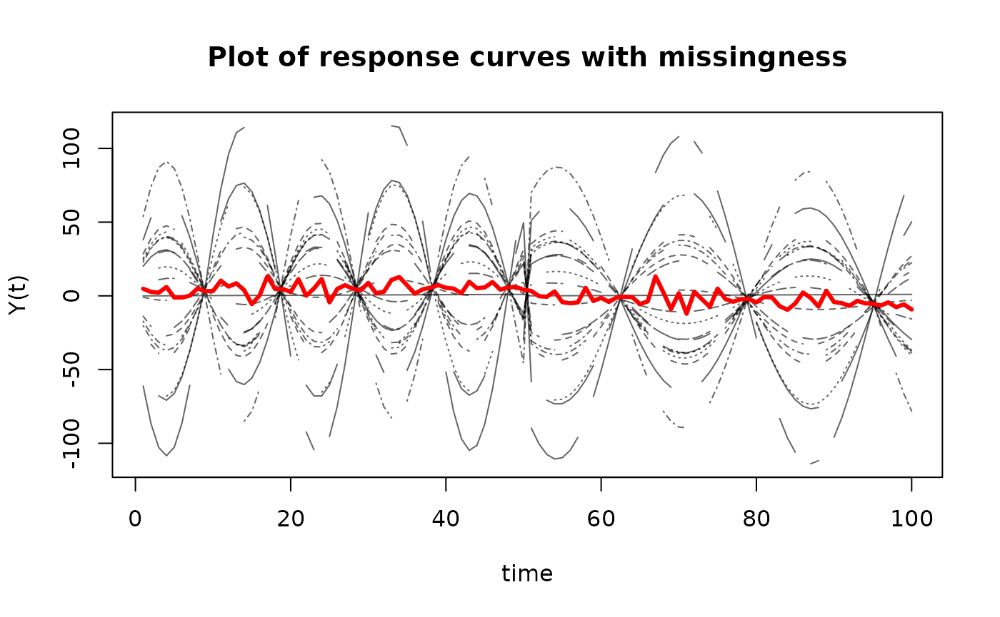

FunOnFun
FunOnFun.Rmd
library(FunOnFun)
library(fdapace)
library(tidyverse)
#> ── Attaching core tidyverse packages ──────────────────────── tidyverse 2.0.0 ──
#> ✔ dplyr 1.1.4 ✔ readr 2.1.5
#> ✔ forcats 1.0.0 ✔ stringr 1.5.1
#> ✔ ggplot2 3.5.1 ✔ tibble 3.2.1
#> ✔ lubridate 1.9.3 ✔ tidyr 1.3.1
#> ✔ purrr 1.0.2
#> ── Conflicts ────────────────────────────────────────── tidyverse_conflicts() ──
#> ✖ dplyr::filter() masks stats::filter()
#> ✖ dplyr::lag() masks stats::lag()
#> ℹ Use the conflicted package (<http://conflicted.r-lib.org/>) to force all conflicts to become errorsIntroduction
Welcome to the FunOnFun package! This package is
designed to conduct multivariate functional Principal Component Analysis
(MFPCA) on irregularly observed data. Let us generate some data:
Generate Data
Independence
set.seed(16)
n = 20
t = seq(0, 1, length.out = 50)
components = 2
mean_funs = list(
function(t) -2*(t-0.5)^2 + 5,
function(t) 3*(t-0.75)^3 - 5
)
eigen_funs_list = list(
list(
function(t) sin(pi*t),
function(t) cos(pi*t)
),
list(
function(t) sin(3*pi*t),
function(t) cos(3*pi*t)
)
)
lambdas = c(5, 3)
X = FunOnFun::simMFPCA(16, t, n, components, mean_funs, eigen_funs_list, lambdas, response = FALSE)Dependent
mean_funs = list(
function(t) 6*exp(-(t-1)^2),
function(t) -2*14^(t-0.5)
)
eigen_funs_list = list(
list(
function(t) cos(5*pi*t),
function(t) sin(5*pi*t)
),
list(
function(t) sin(3*pi*t),
function(t) cos(3*pi*t)
)
)
B = matrix(c(5, 6, 7, 8),
nrow = components,
ncol = components)
Y = FunOnFun::simMFPCA(16, t, n, components, mean_funs, eigen_funs_list, lambdas, response = TRUE, B = B)
sigma = 0.001
E = matrix(rnorm(2*length(t)*n, mean = 0, sd = sigma), n, 2*length(t))
Y$X = Y$X + EVisualize
Visualize Missingness
matplot(t(X_miss),
type='l',
ylab='X(t)',
xlab='time',
main='Plot of predictor curves with missingness',
col=rgb(0,0,0,alpha=0.4))
matlines(apply(t(X_miss), 1, mean, na.rm = T),
type='l',
lwd=3,
lty=1,
col="red")
matplot(t(Y_miss),
type='l',
ylab='Y(t)',
xlab='time',
main='Plot of response curves with missingness',
col=rgb(0,0,0,alpha=0.6))
matlines(apply(t(Y_miss), 1, mean, na.rm = T),
type='l',
lwd=3,
lty=1,
col = "red")
MFPCA
df = X_miss %>% FunOnFun::tibbleFormat(t) %>% FunOnFun::fpcaFormat(id_col = "id")
df_Y = Y_miss %>% FunOnFun::tibbleFormat(t) %>% FunOnFun::fpcaFormat(id_col = "id")Get Univariate FPCA Results
res_X1 = fdapace::FPCA(df$Variable1,
df$Time,
list(dataType = "Sparse",
error = F,
kernel = "epan",
verbose = F,
nRegGrid = length(t)))
res_X2 = fdapace::FPCA(df$Variable2,
df$Time,
list(dataType = "Sparse",
error = F,
kernel = "epan",
verbose = F,
nRegGrid = length(t)))
res_Y1 = fdapace::FPCA(df_Y$Variable1,
df_Y$Time,
list(dataType = "Sparse",
error = T,
kernel = "epan",
verbose = F,
nRegGrid = length(t),
methodSelectK = 2))
res_Y2 = fdapace::FPCA(df_Y$Variable2,
df_Y$Time,
list(dataType = "Sparse",
error = T,
kernel = "epan",
verbose = F,
nRegGrid = length(t),
methodSelectK = 2))Run Irregular MFPCA
res = FunOnFun::irregMFPCA(components = 2,
split = T,
res_X1,
res_X2)
res_Y = FunOnFun::irregMFPCA(components = 2,
split = T,
res_Y1,
res_Y2)